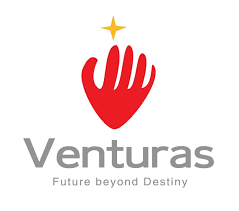

Venturas Ltd
Software Engineer II- Led offshore development for a fintech-media client (30M+ monthly PV), driving timely delivery and cross-team coordination.
- Improved RSS feed ingestion speed 3x via async processing & architectural refinements.
- Led Redis → Valkey migration, cutting AWS ElastiCache cost ~20% with zero downtime.
- Architected an investment-quiz feature engaging 100K+ daily participants.
- Replaced SQL search with inverted-index search; spearheaded Go unit tests & fixed critical CI coverage.